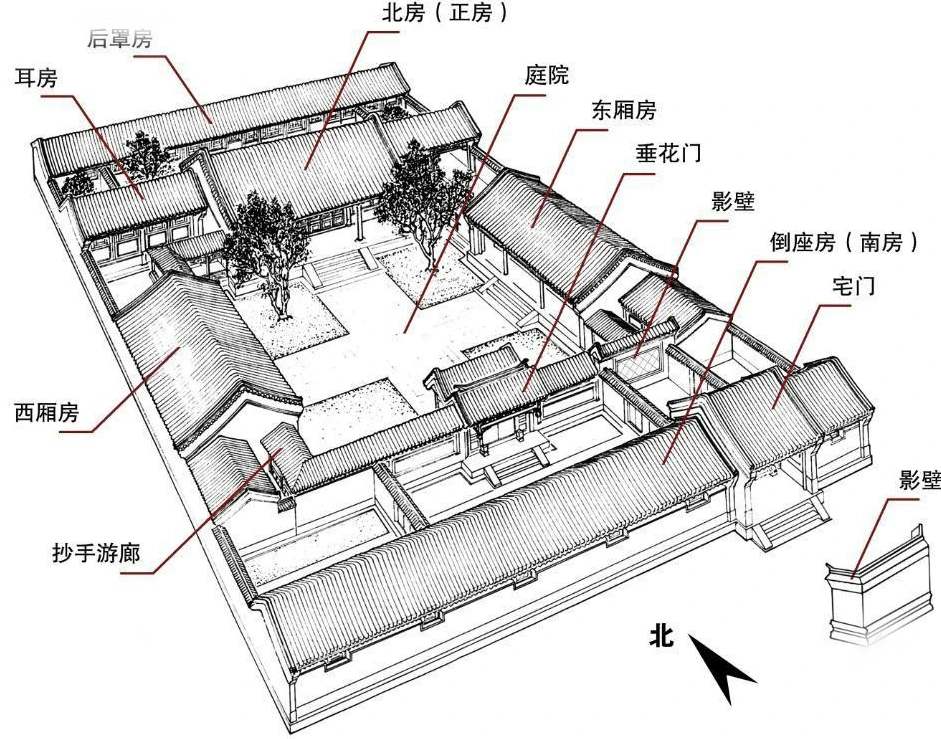
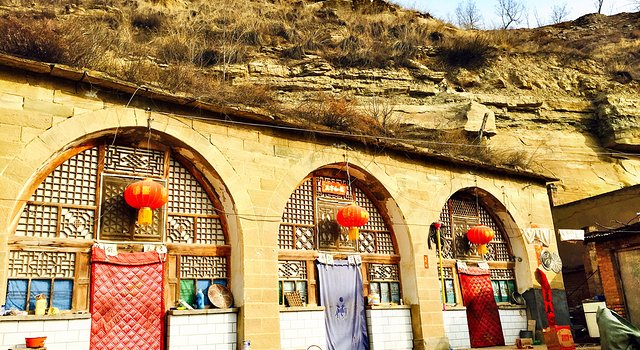
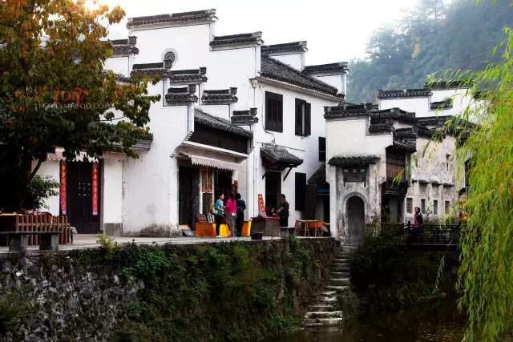
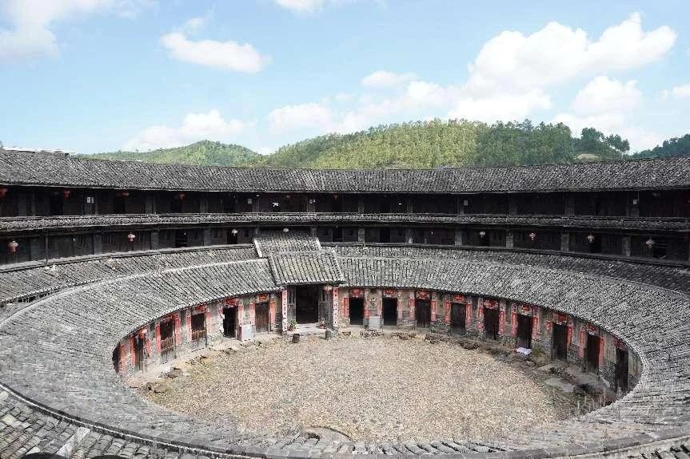
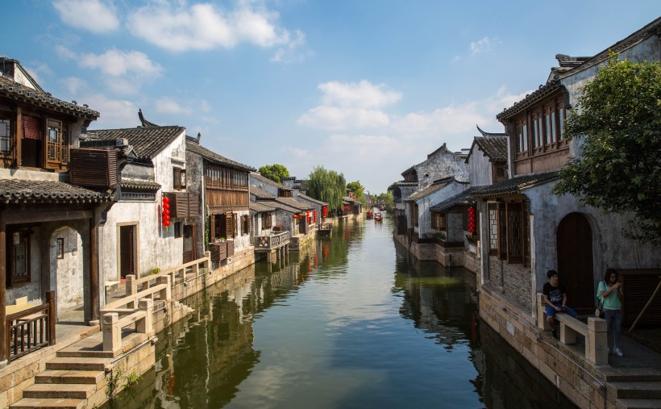

四合院是北方民居的典型代表，以四面房屋围合成院落为核心，讲究中轴对称、尊卑有序。 作为民宿，四合院保留了传统的垂花门、抄手游廊，院内植槐栽竹，尽显老北京的悠然韵味。
西南少数民族的特色民居，多依山傍水而建，下部架空成廊，既通风防潮，又能避蛇虫。 吊脚楼民宿保留了木质结构与雕花栏杆，推窗可见青山绿水，体验浓郁的苗寨风情。

黄土高原的特色民居，利用黄土层的直立性挖掘而成，冬暖夏凉。 现代窑洞民宿保留了传统的土炕、石桌，结合现代设施，体验黄土高原的质朴生活。

以白墙黛瓦、马头墙为特色，建筑布局精巧，雕梁画栋。 徽派民宿多由古宅改造而成，保留了天井、厢房、雕花窗，置身其中如入水墨画卷。

客家民居的代表，以环形或半圆形布局为特色，聚族而居，防御性强。 围龙屋民宿保留了祠堂、禾坪、水井等元素，体验客家文化的厚重与温暖。

依水而建，前街后河，粉墙黛瓦，穿竹石栏。 水乡民宿多为临水而建的阁楼，推窗见水，出门登舟，体验“小桥流水人家”的诗意生活。
古代民宿建筑充分结合地域环境特点：北方四合院注重防寒保暖，南方吊脚楼强调通风防潮，黄土高原窑洞利用地形优势，江南水乡民居依水而建，体现了“天人合一”的建筑理念。
建筑布局遵循传统礼制，讲究中轴对称、尊卑有序。四合院的正房、厢房布局，围龙屋的祠堂居中，都体现了中国传统的家族伦理与社会秩序。
采用天然材料（木材、石材、黄土），利用自然通风、采光、保温原理，窑洞的冬暖夏凉、吊脚楼的通风防潮，都是古人生态智慧的体现。
木雕、砖雕、石雕工艺精湛，徽派民居的三雕艺术、四合院的垂花门、吊脚楼的雕花栏杆，都展现了中国传统建筑的美学价值。
中国古代民宿不仅是居住空间，更是传统文化的载体，承载着中国人的生活哲学与审美情趣：
天人合一：建筑与自然环境高度融合，顺应天时地利，体现了中国人对自然的敬畏与和谐共处的理念。
家族伦理：建筑布局体现了长幼有序、尊卑有别的家族伦理，四合院的正房、厢房划分，围龙屋的聚族而居，都是家族文化的体现。
诗意栖居：注重居住的审美体验，庭院植花木，窗棂有景致，体现了中国人“诗意栖居”的生活追求。
地域文化：不同地域的民宿建筑风格各异，反映了各地的气候、物产、民俗文化，是地域文化的鲜活载体。